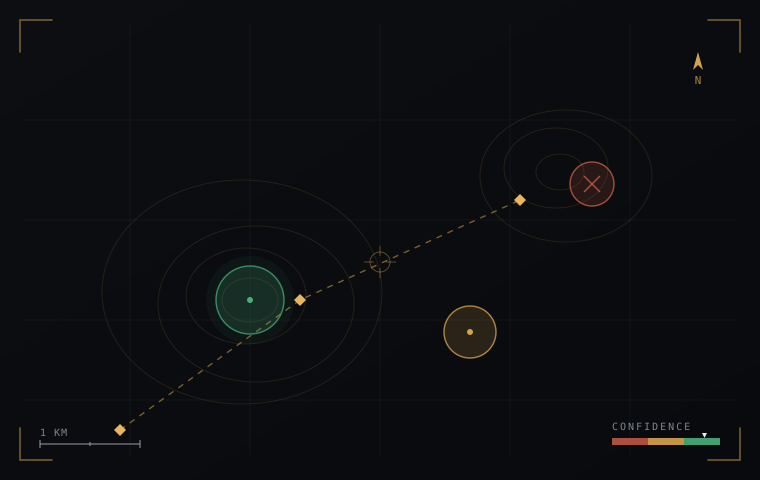

01
From imagery to intelligence
Ingest, organize, and interpret geospatial data from many sources into a single, coherent operating picture.
Decision-grade geospatial intelligence
We turn the imagery you already hold into decision-ready analysis — engineered for the moment when connectivity, time, and certainty all run short.
Engaging a select number of partners.
The most consequential decisions are made with imperfect data, far from the network, against the clock. Most tools assume the opposite. We don't.
—Why it stands out
Most tools hand you data.
We hand you a decision.

01Capabilities
Ingest, organize, and interpret geospatial data from many sources into a single, coherent operating picture.
Every output carries a clear measure of confidence. You always know exactly how far to trust the answer.
Fully operational offline. No cloud and no connectivity required at the point where the decision is made.
Adapts to whatever data is available, then shapes the analysis around the question that actually matters.
Findings flow cleanly into the tools and devices already in use, in the formats they already speak.
Deep analysis where there is time to plan; immediate answers where there is not. Both, from one system.
02Approach
Point it at your data. It catalogs what's there, classifies it, and tells you plainly what analysis is possible — and at what confidence.
Run the questions that matter against the best available source, with a confidence measure attached to every result.
Package decision-ready products for the field, in formats the systems downstream already understand.
03Principles
We build for the moment the data is incomplete, the network is gone, and the decision can't wait.
Confidence is a first-class output, never an afterthought.
Designed to perform with the network as a luxury, not a requirement.
Open formats in, open formats out. No lock-in at the edge.
Built around the person making the call, under real-world constraints.
04About
A small, focused team building decision-grade geospatial tools for environments where the data is incomplete and the stakes are not.
Our work sits at the intersection of geospatial analysis, intelligence tradecraft, and disciplined software delivery. We have planned and run operations in the field, built and shipped mission systems, and felt first-hand the gap between the data available and the decision required.
That experience shapes a single conviction: a tool used at the hardest moment must be honest about what it knows. Everything we build follows from that. Read more about us →
05Contact
We work with a small number of partners who operate where precision matters and second chances are rare. If that's you, start a conversation.
Direct: contact@scrye.example